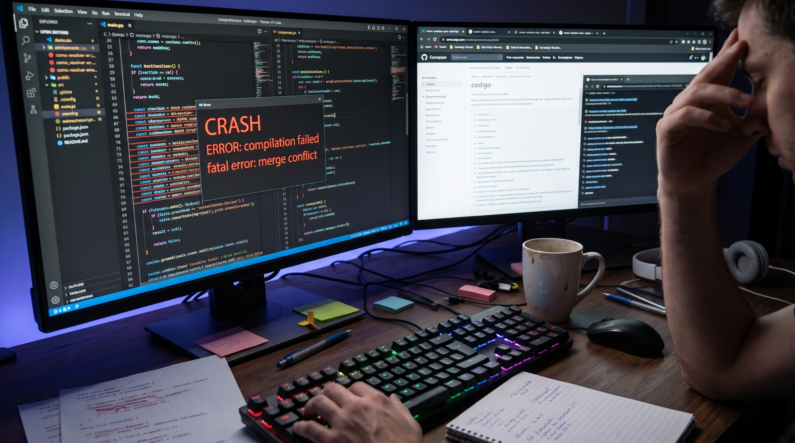

Criar esta página foi um verdadeiro desafio e, embora eu tenha tentado melhorar a parte visual para não deixá-la tão simples, ela ainda vai com alguns erros que decidi não corrigir agora, pois o verdadeiro propósito desta atividade é a prática no Git e GitHub. A organização dos cards para que ficassem em tamanhos legais e os destaques das caixas de texto foram exaustivos, e problemas críticos persistem: a página não está responsiva e, em telas maiores, os cards se sobrepõem e os parágrafos teimam em transbordar para fora das caixas marcadas, além de desalinhamentos no H1 e na renderização de imagens que ainda não ficaram ideais. No entanto, o foco principal foi cumprido com sucesso. Dediquei-me a estruturar um bom arquivo README, a criar e integrar um novo documento (dificil.html) para documentar essas mesmas dificuldades, e a consolidar o fluxo de versionamento, realizando os commits e subindo tudo para o GitHub, provando que, no aprendizado de programação, o processo de versionar e registrar a evolução é tão importante quanto o próprio código.